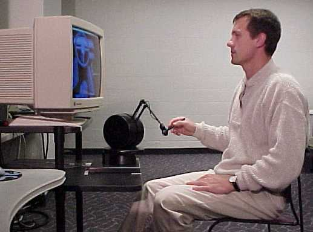

Computer display and haptic device arrangement used for the study
Overview
The evaluation of new computer devices can provide information for the future development of innovations, as well as for integration of these new devices into existing systems and practices. This study measures the effect of haptic sensation on the evaluation of virtual prototypes. The haptic device PHANToM allows users to experience the feel of force feedback in order to convey information between the user and the virtual environment.
The main objective of this study was to evaluate how the information provided by the haptic device affects a person's ability to make design decisions in the virtual environment. Participants were asked to detect and estimate linear and angular differences between alternative virtual parking brake designs. Several measurements were used in order to statistically compare the performance of participants from two groups, haptic versus nonhaptic.
The study found that the haptic treatment significantly improved the precision of estimations in most cases as well as significantly reduced the time required for design evaluation. A survey of participants' preference between the treatments revealed a strong preference for the haptic treatment. In addition, several study observations may advance the integration of this new technology into practice, as well as initiate new research in the area of virtual prototyping and haptic sensation. Several recommendations are made to improve the experimental design of future human factor studies related to mechanical sensations and virtual reality.
Publications
Personnel
Funding
This project was funded by the National Science Foundation Grant # DMI-9625601. Evaluating the Use of Haptics in Virtual CAD Tasks
Facilities
Mechanical Engineering | VRAC | ISU | Home | E-mail | Previous